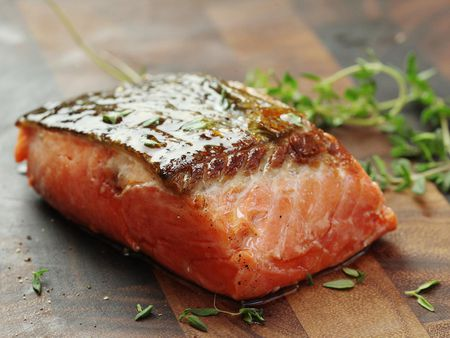

Salmon Recipe

A Staple of any Good Cookbook!
Ingrediants
- 1 tbsp. Brown Sugar
- 2 tsp. Butter
- 1 tsp. Honey
- 1 tbsp. Olive Oil
- 1 tbsp. Dijon Mustard
- 1 tbsp Soy Sauce
- 1/2 - 3/4 tsp. Salt
- 1/4 tsp pepper
- 1 Salmon Fillet (2 Pounds)
Instructions
- In a small saucepan over medium heat, cook and stir the brown sugar, butter and honey until melted. Remove from the heat; whisk in the oil, mustard, soy sauce, salt and pepper. Cool for 5 minutes.
- Place salmon in a large foil-lined baking pan; spoon brown sugar mixture over top. Bake at 350° for 20-25 minutes or until fish flakes easily with a fork.
Nutrition
1 each: 295 calories, 18g fat (3g saturated fat), 84mg cholesterol, 403mg sodium, 3g carbohydrate (2g sugars, 0 fiber), 28g protein.
Other Recipes
If you like what you see here, return to our homepage